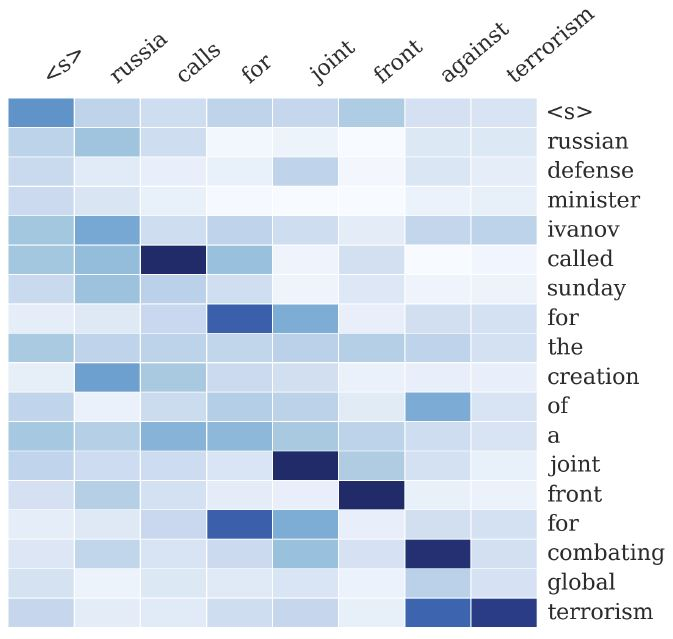
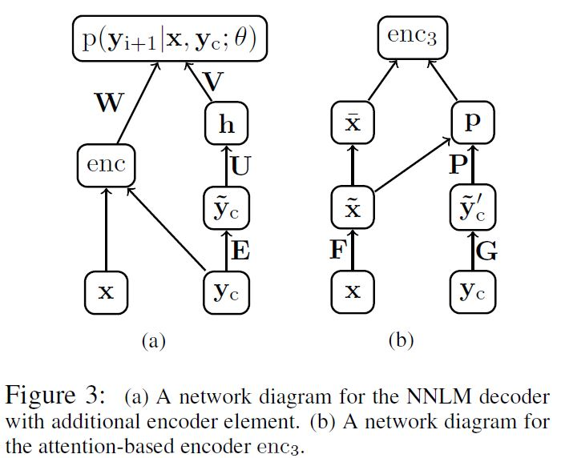
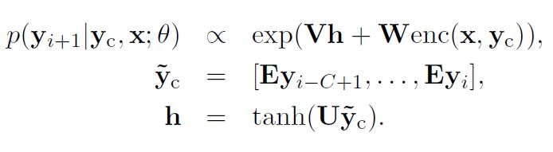
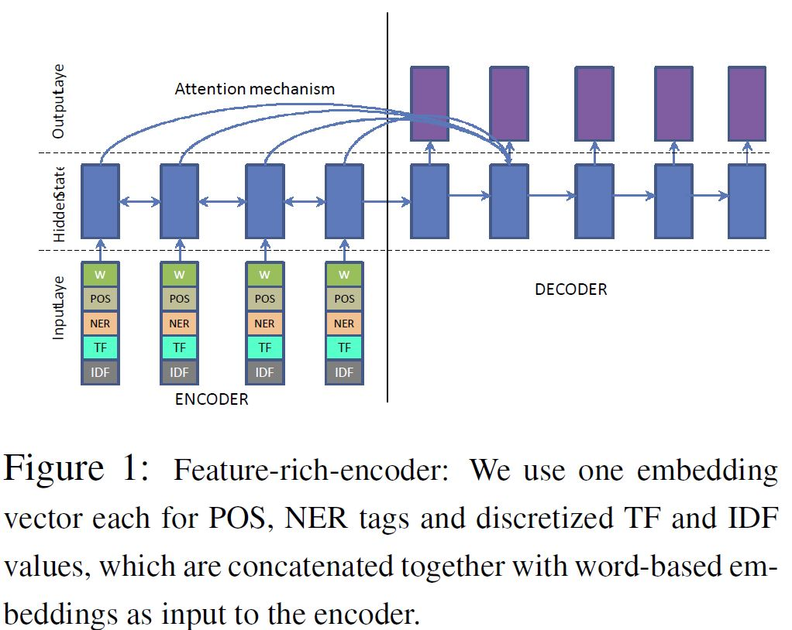
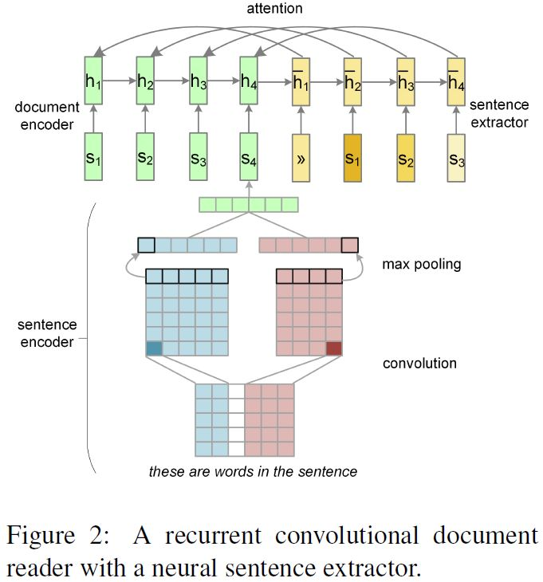

PaperWeekly 第十二期
引
文本摘要是自然语言处理的一大经典任务，研究的历史比较长。随着目前互联网生产出的文本数据越来越多，文本信息过载问题越来越严重，对各类文本进行一个“降维”处理显得非常必要，文本摘要便是其中一个重要的手段。传统的文本摘要方法，不管是句子级别、单文档还是多文档摘要，都严重依赖特征工程，随着深度学习的流行以及seq2seq+attention模型在机器翻译领域中的突破，文本摘要任务也迎来了一种全新的思路。本期PaperWeekly将会分享4篇在这方面做得非常出色的paper：
1、A Neural Attention Model for Abstractive Sentence Summarization, 2015
2、Abstractive Text Summarization using Sequence-to-sequence RNNs and Beyond, 2016
3、Neural Summarization by Extracting Sentences and Words, 2016
4、AttSum: Joint Learning of Focusing and Summarization with Neural Attention, 2016
A Neural Attention Model for Abstractive Sentence Summarization
作者
Rush, A. M., Chopra, S., & Weston, J.
单位
Facebook AI Research / Harvard SEAS
关键词
Neural Attention, Abstractive Sentence Summarization
文章来源
EMNLP 2015
问题
这篇来自Facebook的paper的主题是基于attention based NN的生成式句子摘要/压缩。

模型
该工作使用提出了一种encoder-decoder框架下的句子摘要模型。

作者在文章中介绍了三种不同的encoding方法，分别为：
- Bag-of-Words Encoder。词袋模型即将输入句子中词的词向量进行平均。
- CNN encoder
- Attention-Based Encoder。该encoder使用CNN对已生成的最近c（c为窗口大小）个词进行编码,再用编码出来的context向量对输入句子做attention，从而实现对输入的加权平均。
模型中的decoder为修改过的NNLM，具体地：

式中$$y_c$$为已生成的词中大小为c的窗口，与encoder中的Attention-Based Encoder同义。
与目前主流的基于seq2seq的模型不同，该模型中encoder并未采用流行的RNN。
数据
该文章使用了English Gigaword作为语料，选择新闻中的首句作为输入，新闻标题作为输出，以此构建平行语料。
具体的数据构建方法参见文章。
此外，该文章还使用了DUC2004作为测试集。
简评
在调研范围内，该文章是使用attention机制进行摘要的第一篇。且作者提出了利用Gigaword构建大量平行句对的方法，使得利用神经网络训练成为可能，之后多篇工作都使用了该方法构建训练数据。
Abstractive Text Summarization using Sequence-to-sequence RNNs and Beyond
作者
Nallapati, Ramesh, et al.
单位
IBM Watson
关键词
seq2seq, Summarization
文章来源
In CoNLL 2016
问题
该工作主要研究了基于seq2seq模型的生成式文本摘要。
该文章不仅包括了句子压缩方面的工作，还给出了一个新的文档到多句子的数据集。
模型

该文章使用了常用的seq2seq作为基本模型，并在其基础上添加了很多feature：
- Large Vocabulary Trick。
参见Sébastien Jean, Kyunghyun Cho, Roland Memisevic, and Yoshua Bengio. 2014. On using very large target vocabulary for neural machine translation. CoRR, abs/1412.2007. 添加feature。例如POS tag， TF、IDF， NER tag等。这些feature会被embed之后与输入句子的词向量拼接起来作为encoder的输入。
pointing / copy 机制。使用一个gate来判断是否要从输入句子中拷贝词或者使用decoder生成词。参见ACL 2016的两篇相关paper。
Hierarchical Attention。这是用于文章摘要中多句子的attention，思路借鉴了Jiwei Li的一篇auto encoder的工作。大致思路为使用句子级别的weight对句子中的词进行re-scale。
数据
- English Gigaword
- DUC 2004
- 提出了CNN/Daily Mail Corpus
简评
该工作为在第一篇文章基础上的改进工作，做了大量的实验，非常扎实。文章提出的feature-rich encoder对其他工作也有参考意义，即将传统方法中的特征显示地作为神经网络的输入，提高了效果。
Neural Summarization by Extracting Sentences and Words
作者
Cheng, Jianpeng, and Mirella Lapata.
单位
University of Edinburgh
关键词
Extractive Summarization, Neural Attention
文章来源
ACL 2016
问题
使用神经网络进行抽取式摘要，分别为句子抽取和单词抽取。
模型

句子抽取
由于该工作为文档的摘要，故其使用了两层encoder，分别为：
- 词级别的encoder，基于CNN。即对句子做卷积再做max pooling从而获得句子的表示。
- 句子级别的encoder，基于RNN。将句子的表示作为输入，即获得文档的表示。
由于是抽取式摘要，其使用了一个RNN decoder，但其作用并非生成，而是用作sequence labeling，对输入的句子判断是否进行抽取，类似于pointer network。
词的抽取
对于词的抽取，该模型同样适用了hierarchical attention。与句子抽取不同，词的抽取更类似于生成，只是将输入文档的单词作为decoder的词表。
数据
从DailyMail news中根据其highlight构建抽取式摘要数据集。
简评
该工作的特别之处在于对attention机制的使用。该paper之前的许多工作中的attention机制都与Bahdanau的工作相同，即用attention对某些向量求weighted sum。该工作则直接使用attention的分数进行对文档中句子进行选择，实际上与pointer networks意思相近。
AttSum: Joint Learning of Focusing and Summarization with Neural Attention
作者
Cao, Ziqiang, et al.
单位
The Hong Kong Polytechnic University, Peking University, Microsoft Research
关键词
Query-focused Summarization
文章来源
COLING 2016
问题
Query-focused多文档抽取式摘要
模型

由于该任务为针对某个query抽取出可以回答该query的摘要，模型使用了attention机制对句子进行加权，加权的依据为文档句子对query的相关性（基于attention），从而对句子ranking，进而抽取出摘要。具体地：
- 使用CNN对句子进行encoding
- 利用query，对句子表示进行weighted sum pooling。
- 使用cosine similarity对句子排序。
数据
DUC 2005 ∼ 2007 query-focused summarization benchmark datasets
简评
该文章的亮点之处在于使用attention机制对文档中句子进行weighted-sum pooling，以此完成query-focused的句子表示和ranking。
总结
本次主要介绍了四篇文本摘要的工作，前两篇为生成式（abstractive）摘要，后两篇为抽取式（extractive）摘要。对于生成式摘要，目前主要是基于encoder-decoder模式的生成，但这种方法受限于语料的获得，而Rush等提出了利用English Gigaword（即新闻数据）构建平行句对语料库的方法。IBM在Facebook工作启发下，直接使用了seq2seq with attention模型进行摘要的生成，获得了更好的效果。对于抽取式摘要，神经网络模型的作用多用来学习句子表示进而用于后续的句子ranking。